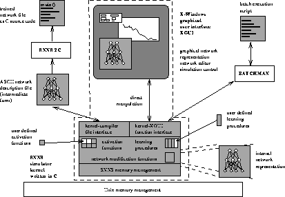
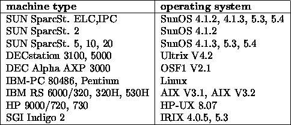

SNNS (Stuttgart Neural Network Simulator) is a simulator for neural networks developed at the Institute for Parallel and Distributed High Performance Systems (Institut für Parallele und Verteilte Höchstleistungsrechner, IPVR) at the University of Stuttgart since 1989. The goal of the project is to create an efficient and flexible simulation environment for research on and application of neural nets.
The SNNS simulator consists of four main
components that are depicted in figure  : Simulator kernel,
graphical user interface, batch simullator version snnsbat, and
network compiler snns2c. There was also a fifth part, Nessus, that was
used to construct networks for SNNS. Nessus, however, has become
obsolete since the introduction of powerful interactive network
creation tools within the graphical user interface and is no longer
supported. The simulator kernel operates on the internal network data
structures of the neural nets and performs all operations on them. The
graphical user interface XGUI
: Simulator kernel,
graphical user interface, batch simullator version snnsbat, and
network compiler snns2c. There was also a fifth part, Nessus, that was
used to construct networks for SNNS. Nessus, however, has become
obsolete since the introduction of powerful interactive network
creation tools within the graphical user interface and is no longer
supported. The simulator kernel operates on the internal network data
structures of the neural nets and performs all operations on them. The
graphical user interface XGUI ,
built on top of the kernel, gives a graphical representation of the
neural networks and controls the kernel during the simulation run. In
addition, the user interface can be used to directly create,
manipulate and visualize neural nets in various ways. Complex
networks can be created quickly and easily. Nevertheless, XGUI should
also be well suited for unexperienced users, who want to learn about
connectionist models with the help of the simulator. An online help
system, partly context-sensitive, is integrated, which can offer
assistance with problems.
,
built on top of the kernel, gives a graphical representation of the
neural networks and controls the kernel during the simulation run. In
addition, the user interface can be used to directly create,
manipulate and visualize neural nets in various ways. Complex
networks can be created quickly and easily. Nevertheless, XGUI should
also be well suited for unexperienced users, who want to learn about
connectionist models with the help of the simulator. An online help
system, partly context-sensitive, is integrated, which can offer
assistance with problems.

An important design concept was to enable the user to select only those aspects of the visual representation of the net in which he is interested. This includes depicting several aspects and parts of the network with multiple windows as well as suppressing unwanted information.

SNNS is implemented completely in ANSI-C. The simulator kernel has already
been tested on numerous machines and operating systems (see also table
 ). XGUI is based upon X11 Release 5 from MIT and the
Athena Toolkit, and was tested under various window managers, like
twm, tvtwm, olwm, ctwm, fvwm. It also works under X11R6.
). XGUI is based upon X11 Release 5 from MIT and the
Athena Toolkit, and was tested under various window managers, like
twm, tvtwm, olwm, ctwm, fvwm. It also works under X11R6.
This document is structured as follows:
This chapter  gives a brief introduction and
overview of SNNS.
gives a brief introduction and
overview of SNNS.
Chapter  gives the details about how to obtain
SNNS and under what conditions. It includes licensing, copying and
exclusion of warranty. It then discusses how to install SNNS and gives
acknowledgments of its numerous authors.
gives the details about how to obtain
SNNS and under what conditions. It includes licensing, copying and
exclusion of warranty. It then discusses how to install SNNS and gives
acknowledgments of its numerous authors.
Chapter  introduces the components of neural nets
and the terminology used in the description of the simulator.
Therefore, this chapter may also be of interest to people already
familiar with neural nets.
introduces the components of neural nets
and the terminology used in the description of the simulator.
Therefore, this chapter may also be of interest to people already
familiar with neural nets.
Chapter  describes how to operate the two-dimensional
graphical user interface. After a short overview of all commands a
more detailed description of these commands with an example dialog is
given.
describes how to operate the two-dimensional
graphical user interface. After a short overview of all commands a
more detailed description of these commands with an example dialog is
given.
Chapter  describes the form and usage of the patterns
of SNNS
describes the form and usage of the patterns
of SNNS
Chapter  describes the integrated graphical editor of
the 2D user interface. These editor commands allow the interactive
construction of networks with arbitrary topologies.
describes the integrated graphical editor of
the 2D user interface. These editor commands allow the interactive
construction of networks with arbitrary topologies.
Chapter  is about a tool to facilitate the generation of
large, regular networks from the graphical user interface.
is about a tool to facilitate the generation of
large, regular networks from the graphical user interface.
Chapter  describes the network analyzing facilities,
built into SNNS.
describes the network analyzing facilities,
built into SNNS.
Chapter  describes the connectionist models that are
already implemented in SNNS, with a strong emphasis on the less
familiar network models.
describes the connectionist models that are
already implemented in SNNS, with a strong emphasis on the less
familiar network models.
Chapter  describes the four pruning functions which are
available in SNNS.
describes the four pruning functions which are
available in SNNS.
Chapter  introduces a new visualization component for
three-dimensional visualization of the topology and the activity of
neural networks with wireframe or solid models.
introduces a new visualization component for
three-dimensional visualization of the topology and the activity of
neural networks with wireframe or solid models.
Chapter  describes how to use the full power of
multiple computers in a cluster of workstations for training networks
with SNNS.
describes how to use the full power of
multiple computers in a cluster of workstations for training networks
with SNNS.
Chapter  introduces the batch capabilities of SNNS.
They can be accessed via an additional interface to the kernel, that
allows for easy background execution.
introduces the batch capabilities of SNNS.
They can be accessed via an additional interface to the kernel, that
allows for easy background execution.
Chapter  gives a brief overlook over the tools that
come with SNNS, without being an internal part of it.
gives a brief overlook over the tools that
come with SNNS, without being an internal part of it.
Chapter  describes in detail the
interface between the kernel and the graphical user interface. This
function interface is important, since the kernel can be included in
user written C programs.
describes in detail the
interface between the kernel and the graphical user interface. This
function interface is important, since the kernel can be included in
user written C programs.
Chapter  details the activation functions and output
function that are already built in.
details the activation functions and output
function that are already built in.
In appendix A the format of the file interface to the kernel is described, in which the nets are read in and written out by the kernel. Files in this format may also be generated by any other program, or even an editor.
The grammars for both network and pattern files are also given here.
In appendix B and C examples for network and batch configuration files are given.